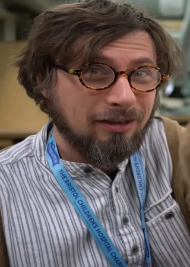

Nacido el 17 de Noviembre de 1983, Patrick Nolen McHale es un animador, guionista, director y músico
estadounidense.
Más Allá del Jardín se desarrolló a partir de un cortometraje previo de Patrick, llamado Tome of the Unknown,
basado en el folklore de los hermanos Grimm y los cortometrajes más antiguos de Walt Disney.
Despues del exito de la serie, Patrick McHale co-escribio la adaptacion de Pinocho de Guillermo del Toro,
ayudó a desarrollar la pelicula de Hora de Aventura, y colaboró con Aardman Animations para crear un cortometraje de
stop motion basado en Más Allá del Jardín para su aniversario de diez años.
